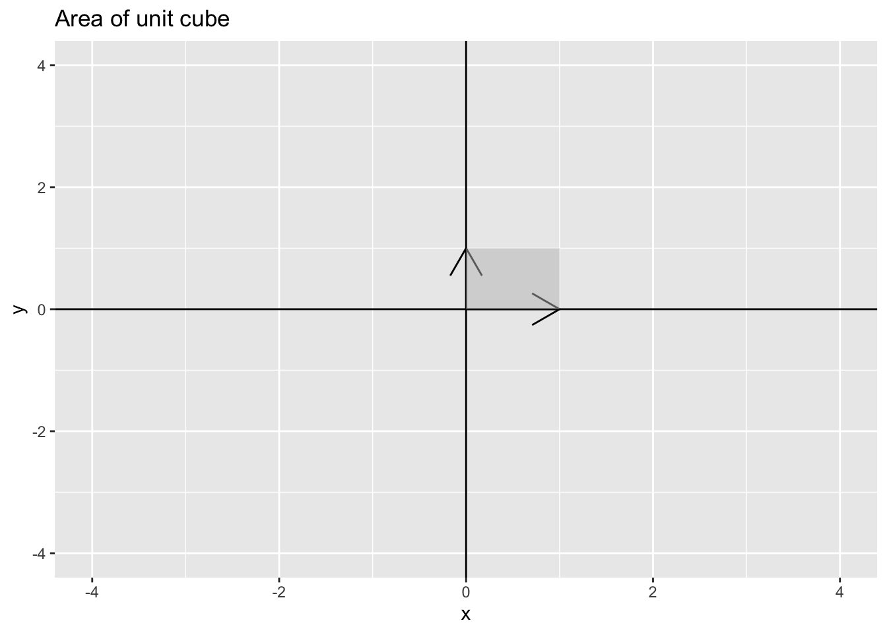
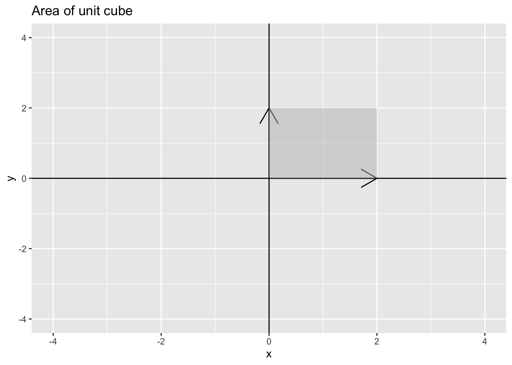

library(tidyverse)
library(dasc2594)14 Determinants and volumes
Definition 14.1 The parallelpiped defined by \(n\) vectors \(\mathbf{a}_1, \mathbf{a}_2, \ldots, \mathbf{a}_n \in \mathcal{R}^n\) with coefficients \(x_1, x_2, \ldots, x_n\) is the subset
\[ \begin{aligned} \mathcal{P} = \{x_1 \mathbf{a}_1 + x_2 \mathbf{a}_2 + \cdots + x_n \mathbf{a}_n | 0 \leq x_1, x_2, \ldots, x_n \leq 1 \} \end{aligned} \]
The determinant is a function that takes the vectors \(\mathbf{a}_1, \mathbf{a}_2, \ldots, \mathbf{a}_n\) that make up the columns of \(\mathbf{A}\) and returns the volume of the parallelpiped \(\mathcal{P}\) from Definition (@ref(def:parallelpiped))
Example 14.1
The unit cube: in class–use standard vectors \(\mathbf{e}_1, \mathbf{e}_2\), and \(\mathbf{e}_3\)
Example 14.2 parallelograms in \(\mathcal{R}^2\): the unit square
df_vector <- data.frame(x = c(1, 0), y = c(0, 1))
df_polygon <- data.frame(x = c(0, 1, 1, 0), y = c(0, 0, 1, 1))
p1 <- ggplot() +
geom_segment(aes(x = 0, xend = df_vector$x[1], y = 0, yend = df_vector$y[1]), arrow = arrow()) +
geom_segment(aes(x = 0, xend = df_vector$x[2], y = 0, yend = df_vector$y[2]), arrow = arrow()) +
geom_vline(xintercept = 0) +
geom_hline(yintercept = 0) +
coord_cartesian(xlim = c(-4, 4), ylim = c(-4, 4)) +
geom_polygon(data = df_polygon, aes(x = x, y = y),
fill = "grey", alpha = 0.5) +
ggtitle("Area of unit cube")
p1
Which implies that if \(\mathbf{A} = \begin{pmatrix} 1 & 0 \\ 0 & 1 \end{pmatrix}\) has \(\det(\mathbf{A}) = 1\) because \(\mathbf{A} = \mathbf{I}\) the identity matrix.
det(matrix(c(1, 0, 0, 1), 2, 2))[1] 1parallelograms in \(\mathcal{R}^2\): A larger square
df_vector <- data.frame(x = c(2, 0), y = c(0, 2))
df_polygon <- data.frame(x = c(0, 2, 2, 0), y = c(0, 0, 2, 2))
p1 <- ggplot() +
geom_segment(aes(x = 0, xend = df_vector$x[1], y = 0, yend = df_vector$y[1]), arrow = arrow()) +
geom_segment(aes(x = 0, xend = df_vector$x[2], y = 0, yend = df_vector$y[2]), arrow = arrow()) +
geom_vline(xintercept = 0) +
geom_hline(yintercept = 0) +
coord_cartesian(xlim = c(-4, 4), ylim = c(-4, 4)) +
geom_polygon(data = df_polygon, aes(x = x, y = y),
fill = "grey", alpha = 0.5) +
ggtitle("Area of unit cube")
p1
Which implies that if \(\mathbf{A} = \begin{pmatrix} 2 & 0 \\ 0 & 2 \end{pmatrix}\) has \(\det(\mathbf{A}) = 4\) because \(\mathbf{A} = 2 \mathbf{I}\) and the rule is for a constant \(c, \det(c\mathbf{A}) = c^n \det(\mathbf{A})\)
det(matrix(c(2, 0, 0, 2), 2, 2))[1] 4The Shiny app below allows you to plot the vector for any \((x, y)\) pair of your choosing.
library(shiny)
runGitHub(rep = "multivariable-math",
username = "jtipton25",
subdir = "shiny-apps/chapter-14/determinants-volume/") Theorem 14.1 (Determinants and Volume) Let \(\mathbf{a}_1, \mathbf{a}_2, \ldots, \mathbf{a}_n\) be vectors in \(\mathcal{R}^n\), let \(\mathcal{P}\) be the parallelpiped determined by these vectors, and let \(\mathbf{A}\) be the matrix with columns \(\mathbf{a}_1, \mathbf{a}_2, \ldots, \mathbf{a}_n\). Then, the absolute value of the determinant of \(\mathbf{A}\) is the volume of the parallelpiped \(\mathcal{P}\):
\[ \begin{aligned} |\det(\mathbf{A})| = \operatorname{volume}(\mathcal{P}) \end{aligned} \]
Note: Because \(\det(\mathbf{A}) = \det(\mathbf{A}')\), the absolute value of the determinant is equal to the volume of the parallelpiped defined by the columns of \(\mathbf{A}\) (we could just have easily done all the calculations on the columns of \(\mathbf{A}\) as the rows of \(\mathbf{A}\)).
Example 14.3
1 by 1 matrix \(a\) (length) has \(\det(a) = a\)
Example 14.4
2 by 2 matrix \(\begin{pmatrix} a & c \\ b & d \end{pmatrix}\)
Example 14.5
Find the area of a parallelogram with sides defined by the vectors \(\begin{pmatrix} 2 \\ 4 \end{pmatrix}\) and \(\begin{pmatrix} -1 \\ 2 \end{pmatrix}\)
area of a triangle – choose two sides and find area of parallelogram and divide by 2
Example 14.6 Recall that in data science, a probability distribution is function that has volume under the surface of one. For common distributions, particularly the normal/Gaussian distribution, the determinant is the factor that scales the function so that the volume under the surface is one.
The vector \(\mathbf{y}\) is said to have a multivariate normal distribution with mean \(\boldsymbol{\mu}\) and covariance matrix \(\boldsymbol{\Sigma}\) if the probability density function of \(\mathbf{y}\) is
\[ \begin{aligned} f(\mathbf{y}) = (2 \pi)^{-n/2} |\det(\boldsymbol{\Sigma})|^{-1/2} e^{- \frac{1}{2} (\mathbf{y} - \boldsymbol{\mu})' \boldsymbol{\Sigma}^{-1} (\mathbf{y} - \boldsymbol{\mu})} \end{aligned} \]
Notice in this equation that the determinant \(\det(\boldsymbol{\Sigma})\) plays a key role in the definition of the probability distribution. This is because
\[\begin{aligned} \int_{\mathbf{y}} (2 \pi)^{-n/2} e^{- \frac{1}{2} (\mathbf{y} - \boldsymbol{\mu})' \boldsymbol{\Sigma}^{-1} (\mathbf{y} - \boldsymbol{\mu})} \, d\mathbf{y} = |\det(\boldsymbol{\Sigma})|^{1/2} \end{aligned} \]
which implies that
\[ \begin{aligned} \frac{\int_{\mathbf{y}} (2 \pi)^{-n/2} e^{- \frac{1}{2} (\mathbf{y} - \boldsymbol{\mu})' \boldsymbol{\Sigma}^{-1} (\mathbf{y} - \boldsymbol{\mu})} \, d\mathbf{y}}{|\det(\boldsymbol{\Sigma})|^{1/2}} = 1 \end{aligned} \]
In probability and statistics, the denominator is known as the “normalizing constant.”
14.1 Volumes of Parallelpipeds
Let \(\mathbf{a}_1\) and \(\mathbf{a}_2\) be nonzero vectors. Then, for any scalar \(c\), the area of the parallelpiped defined by \(\mathbf{a}_1\) and \(\mathbf{a}_2\) is the same as the area of the parallelpiped defined by the vectors \(\mathbf{a}_1\) and \(\mathbf{a}_2 + c \mathbf{a}_1\) (an elementary column operation).
Draw a parallelpiped in class. Recall that areas of a parallelpiped are defined (in 2 dimensions) as the length of the base times the height perpindicular to the base. In 3 dimensions, the volume of a parallelpiped is the base times the width (the area of the base) times the height.
14.2 Volumes of Linear Transformations
Recall linear transformations \(T:\mathcal{R}^n \rightarrow \mathcal{R}^n\) (Section @ref(linear-transformations)) where for any \(\mathbf{x} \in \mathcal{R}^n\) (the domain), \(T(\mathbf{x}) = \mathbf{A} \mathbf{x} \in \mathcal{R}^n\) (the codomain).
Theorem 14.2
Let \(\mathcal{S}\) be a set in the domain that has a volume \(vol(\mathcal{S})\). Then, the volume of the image of the set under the transformation \(T(\mathcal{S})\) is \(vol(T(\mathcal{S})) = |\det(\mathbf{A})|vol(\mathcal{S})\)